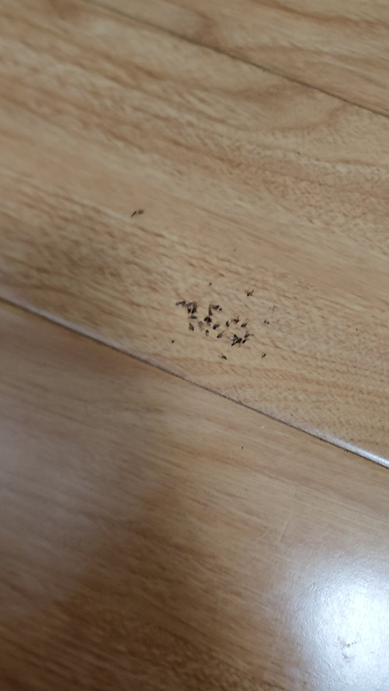

新中国第一毒枭𝐃𝐢𝐳𝐳𝐲𝟒𝟔𝟐𝟎𝟓𝟖
@AngelMayLies
@ovum0000 这种一般都是猫粮，就是你以后喂它的时候，你少给它点，别让它一直剩下，你就一次只喂它一小点，然后多喂喂它，夏天了猫粮放久就容易招虫子

支国人种美学讲师
@ovum0000
自从我饲养了猫畜牲，房间里天天都是这种飞虫，原本以为就几只，没想到一地板一床单全是的、这还只是四分之一，还有很多我扔垃圾桶、了。我觉得不止三四十几只。你们能想象一下天天在打扫卫生并且前几天才刚换了床单结果有一房间小飞虫的感受吗。呵呵。我都不知道是因为牠的畜砂还是水还是畜粮引起的。 https://t.co/v0OcPhZllE